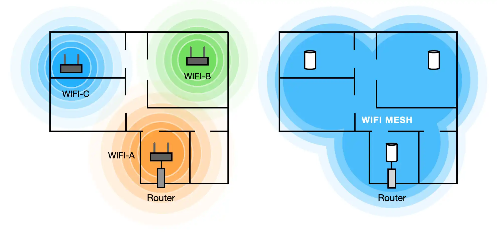

Adios a los Cables: Guia para una Red WiFi Mesh en Casa y Oficina

Los extensores de rango (repetidores) suelen crear mas problemas que soluciones. La tecnologia WiFi Mesh es el futuro de la conectividad total...
¿Como funciona la Red Mesh?
A diferencia de los repetidores que crean redes separadas, un sistema Mesh utiliza varios nodos que actuan como una unica red unificada e inteligente.